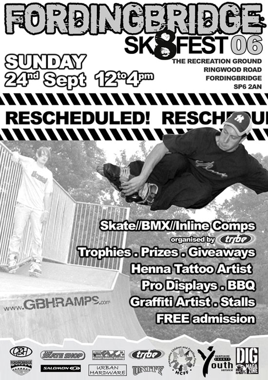
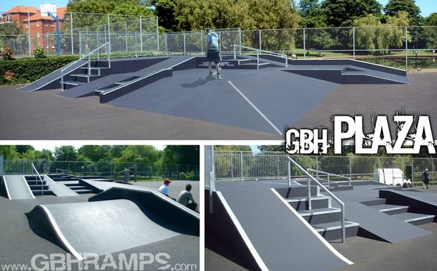
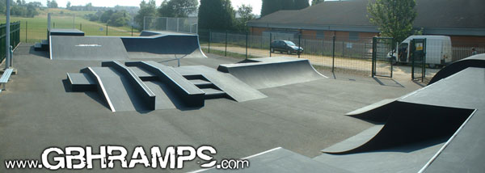
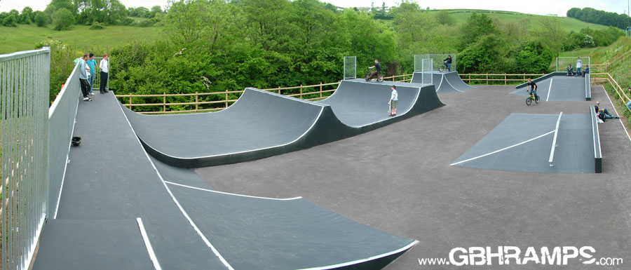
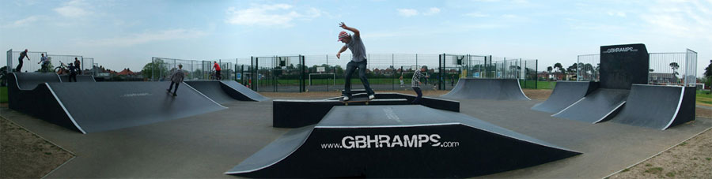

Latest success stories from the GBH Ramps crew.
If you've not yet had a copy of our latest CD Rom, or need some help with a skatepark project we'd love to hear from you.

GBH Ramps Presents the Paignton Plaza
June 2006
In Victoria Park, Torbay Road, Paignton, Devon, a massive 14 by 9 street skate area has been commissioned by Torbay Council, crafted by GBH Ramps and crowned the Paignton Plaza. Starring multiple flatbanks, a generation gap and three different stair sets with rails, ledges and banks; its vast scale gives the skater plenty of time and space to plan their run.
Its unique design, fantasised by Devon Skaters and materialised by GBH’s Russ Holbert, allows the skater to travel to all areas of the park, creating multidirectional flowing lines. With its many facets this plaza is still just a little taster of the final dream scheme. The final phase will develop the street skate plaza theme with a miniramp plaza unit, a central circular pod, and a wall ride sandwiched between two quarters.

Born on the 4th July
The New GBH Shirebrook Skatepark
4th July 2006
The youth of Shirebrook celebrate their independence today in style with the installation of their very own GBH skatepark that brings with it all the freedom of having their own special place to play.
Bolsover District Council worked together with GBH Ramps, both consulting closely with the local skaters and riders to bring this project to fruition.
The 6 metre wide miniramp unit includes sloped quarters and a wide flatbank that provides perfect entrance and return for the comprehensive street area. While the street area itself is made up of a jumpbox, volcano and an ultra, ultra wide driveway unit; rails, steps, a generation gap and a really wide flatbank.
At the far end of the park is a wall of returns made up of quarters, flatbanks, a set back Wembley gap and a rollin, all with a massive 3 metre platform for plenty of space to manouver. A couple of benches have also been included but not just for spectators to recline on whilst watching the amazing feats of the skaters, but also for the skaters to perform even more amazing feats on!
The New GBH Shirebrook Skatepark can be found at Shirebrook Town Park, Park Road, Shirebrook, Notts, NG20 8JQ.

Eager Beavers at Brixham’s New GBH Skatepark
May 2006
So you have just been given the official ok by the RoSPA safety guys and relay this message to the local skater loitering on the edge of the park, when you notice at the edge of your peripheral vision a rustling in the bushes. Right on cue, like some covert military operation, the concealed skaters of Brixham eagerly emerge from the camouflage of the bushes, board in hand to take ownership of their new GBH Skatepark.
For GBH’s project manager Russ, who designed the Brixham skatepark in conjunction with the local kids, this was the most fulfilling part of the whole project; the kids couldn’t wait a moment longer to session their ramps. This park was a long time in the conception period as Brixham 21 and Brixham Youth Enquiry Service (Y.E.S) struggled against seemingly impossible odds to find a site, almost losing the funding due to time constraints. Thankfully, the local council supported by Groundwork Torbay gave one final push and this sweet little baby of a skatepark was conceived.
The Brixham skatepark on Monksbridge Road, Devon has a huge low level pyramid with grind rail, a mammoth flatbank hip with integrated grind ledge, a spine/ volcano miniramp leading you into a hipped quarterpipe and a flatbank Wembley gap section which is linked by two quarterpipes, with a BMX friendly sub box, lovely.

Defy Gravity at GBH’s New Veracity skatepark
Derelict areas of the Veracity recreation ground in Southampton have been given a £600,000 facelift, courtesy of Barclays Spaces for Sports. The extreme part of this makeover is the installation of the GBH Veracity skatepark, which was officially opened this month, with top skaters Pete King and Rodney Clarke
The GBH Veracity skatepark includes in its vast equipment list a superwide street funbox section, miniramp complex, a gapped wallride leading to a huge quarterpipe; all offering flowing lines as only GBH Ramps can. Mr Clarke gave the new ramps his seal of approval; “Southampton has needed a venue like this for a long time. A good, fun, cruising park; people should like it.”
Mike Harris, Acting Head of Leisure, Southampton City Council commented on what a wonderful asset the facility is for the local community "The new multi use games area, skateboarding and basketball facilities at the Veracity Recreation Ground gives a major boost to sport in Southampton, promoting local sporting talent for the 2012 Olympics and beyond. The Council's sports development unit will be working with coaches from Southampton Football Club to ensure young people get the most out of these new sports pitches. The whole community will benefit from these fantastic new facilities."
GBH Veracity Skatepark can be found on Sholing Road, Southampton.
GBH Ramps Conquers Canvey Island
GBH Ramps is also proud to announce the completion of Phase one of the Waterside Skatepark, Waterside Farm sports centre on Canvey Island, Essex. Ray Howard, chairman of Castle Point Borough Council’s environment committee, who has been heavily involved in the project stated “I am thrilled that the site is now ready for use. Young people have shown a lot of enthusiasm for the project and this shows, with enough dedication they can make things happen. We are delighted to have been able to help.”
Phase one consists of an immense 10.5m miniramp which incorporates a spine, a volcano, sloped coping section and perfect flowing rollover. The integrated quarterpipe and flatbank lips patiently wait for phase two to begin as they will help flow the riders from the mini into the massive plaza style street course.
Funding was awarded from the Cleanaway Marshes Trust and Living Spaces and further fundraising is underway to raise the amount needed to commence phase two. Youth Worker for Essex County Council in Castle Point, Jamie Sawtell, commented "The young people's efforts have been incredible from leg waxing to presentations and they fully deserve such a great facility. Essex County Youth Service is continuing to meet with the young people, supporting them into the second phase of the project and completion of one of the largest skateparks in the country."
GBH Ramps Conquers Canvey Island
GBH Ramps is also proud to announce the completion of Phase one of the Waterside Skatepark, Waterside Farm sports centre on Canvey Island, Essex. Ray Howard, chairman of Castle Point Borough Council’s environment committee, who has been heavily involved in the project stated “I am thrilled that the site is now ready for use. Young people have shown a lot of enthusiasm for the project and this shows, with enough dedication they can make things happen. We are delighted to have been able to help.”
Phase one consists of an immense 10.5m miniramp which incorporates a spine, a volcano, sloped coping section and perfect flowing rollover. The integrated quarterpipe and flatbank lips patiently wait for phase two to begin as they will help flow the riders from the mini into the massive plaza style street course.
Funding was awarded from the Cleanaway Marshes Trust and Living Spaces and further fundraising is underway to raise the amount needed to commence phase two. Youth Worker for Essex County Council in Castle Point, Jamie Sawtell, commented "The young people's efforts have been incredible from leg waxing to presentations and they fully deserve such a great facility. Essex County Youth Service is continuing to meet with the young people, supporting them into the second phase of the project and completion of one of the largest skateparks in the country."